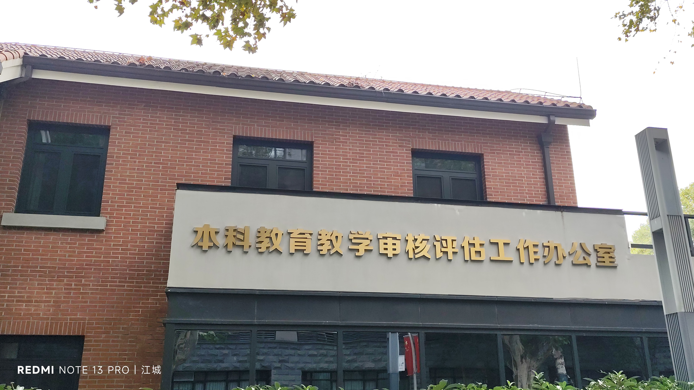
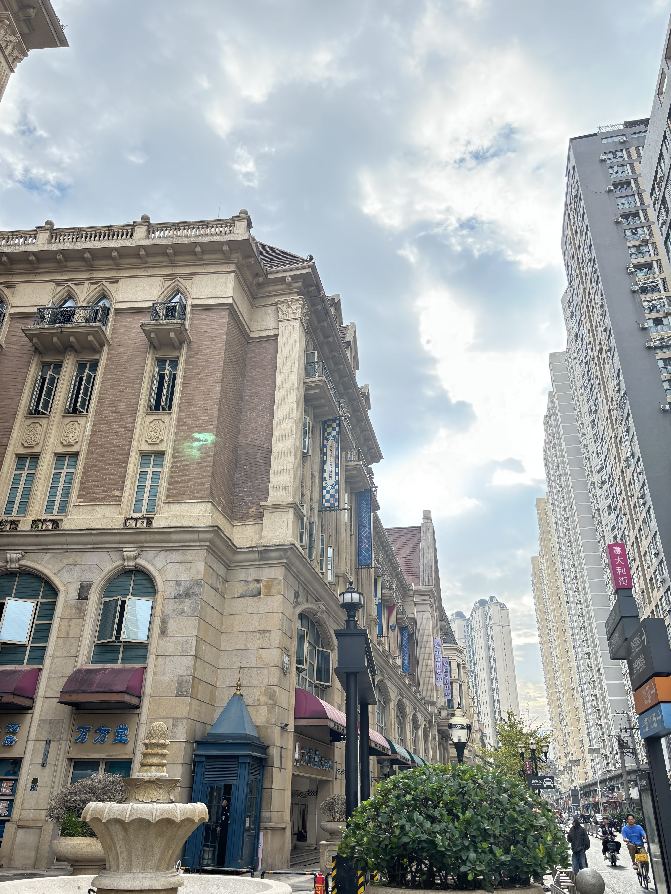
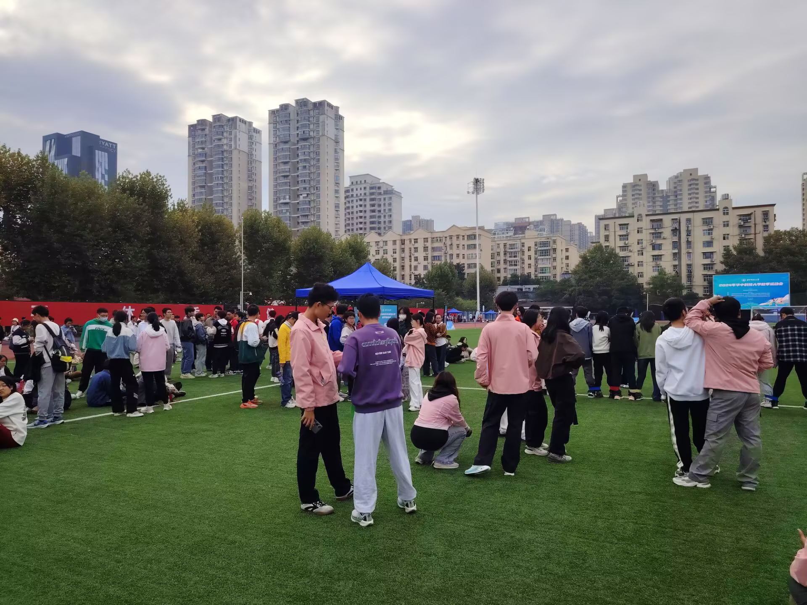
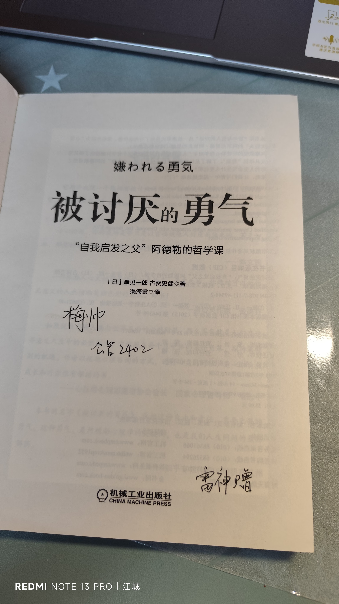
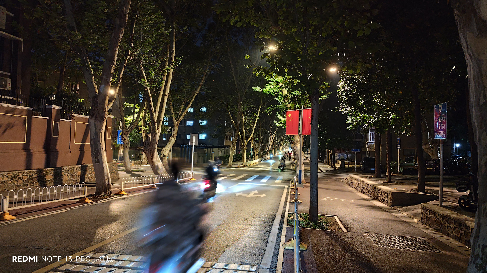

Journal · 2024-10-28
湖北省武汉市
柴江赣北 : 补上一张
（注意，这里是放本日的最后一张插图）
孙朝一 : 迟到了，生日快乐
柴江赣北 : 谢啦！
柴江赣北 :





Chai Jiang Gan Bei: here’s one more photo
(Note: this is where the last illustration of the day goes)
Sun Chaoyi: I’m late, happy birthday
Chai Jiang Gan Bei: Thanks!
Chai Jiang Gan Bei:
Chai Jiang Gan Bei : voici une photo de plus
(Note : c’est ici que se trouve la dernière illustration du jour)
Sun Chaoyi : en retard, joyeux anniversaire
Chai Jiang Gan Bei : merci !
Chai Jiang Gan Bei :
Chai Jiang Gan Bei: hier noch ein Foto
(Hinweis: hier kommt die letzte Illustration des Tages hin)
Sun Chaoyi: zu spät, alles Gute zum Geburtstag
Chai Jiang Gan Bei: danke!
Chai Jiang Gan Bei: